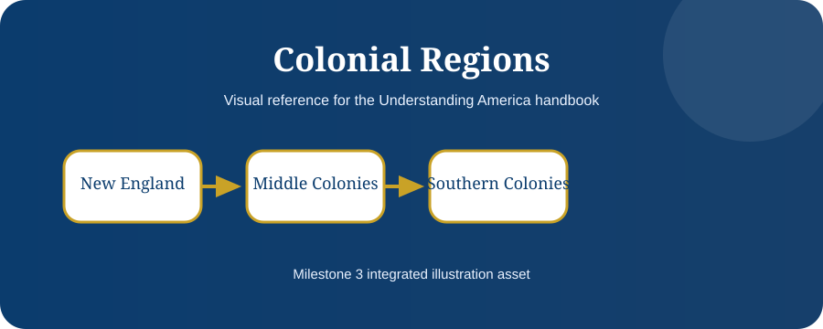

The Complete Naturalization Interview
Knowing the interview process reduces anxiety and helps applicants prepare confidently.
Learning Objectives
- Prepare documents
- Understand interview flow
- Know possible outcomes

Before the Interview
USCIS sends an interview notice with date, time, location, and required documents. Applicants should review the notice, their N-400, travel history, and civics questions.
At the Office
Applicants pass security, wait to be called, swear to tell the truth, verify identity, and review the N-400 with the officer.
English and Civics Tests
The officer evaluates speaking through the interview, asks reading and writing tasks, and asks up to 10 civics questions. Passing generally requires 6 correct answers.
Decision and Oath
Possible outcomes include recommended approval, continued, or denied. Approved applicants complete the process by taking the Oath of Allegiance.

Chapter Summary
- Bring required documents.
- Answer truthfully.
- You become a citizen after the oath.
Key Terms
Constitution · Government · Rights · Citizenship · Federalism · Representation · Rule of Law
Review Questions
- What is the main idea of this chapter?
- How does this chapter connect to the Constitution?
- Why is this topic important for citizenship?
- Give one real-life example from this chapter.